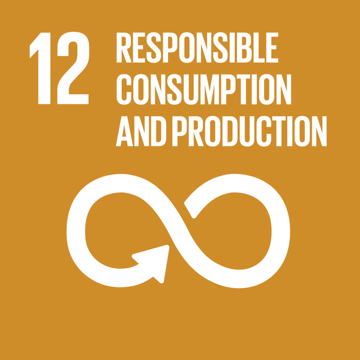

Sustainability
Fishing vessels
Sustainability and traceability of food products have received increased attention due to food safety and consumer demand for knowledge of the origin of their food as well as attempts to reduce food fraud. In recent years, traceability systems have been used to document and share sustainability information in food supply chains.

The UN sustainability and development goal number 12
Most Norwegian fishing vessels capture detailed data on the catch and quality of fish electronically. Information is automatically reported to the authorities. However, most information regarding the quality and sustainability is not communicated further down the supply chain. Significant data gaps include the fuel and energy consumption in the supply chain, as well as detailed data on the transport routes and modes of the fish products. Increasing information sharing in the supply chain could improve decision making in producing sustainable high-quality fish products.
To bring seafood from sea to dinner table it is necessary to maintain a low temperature. The FAO estimates that 35% of fish and other seafood are lost. The United Nations’ sustainability and development goal nr. 12 addresses this problem, by highlighting the importance of creating more efficient production and supply chains. One important measure to reduce sea food losses is to use efficient refrigeration systems, which prevents food from degrading. Reducing food temperatures also improves quality and extends shelf life.
However, since refrigeration requires electricity to operate compressors, pumps and fans, increasing the volume of refrigeration systems worldwide would lead to increased energy consumption, unless there is a simultaneous focus on increased energy efficiency. In addition, on a global scale most fishing vessels still use environmentally harmful refrigerants, contributing to both ozone depletion and global warming.
Consumers requires more information about carbon footprint, environmental impact and traceability. For example, it will be important for consumers to know where and how a product is produced, how the temperature has been during processing and transport.
Important areas to focus on for fisheries are therefore to improve efficiency of refrigeration systems, to record temperature and power usage, and replace harmful refrigerants with environmentally benign ones. Norway fisheries has pioneered the use of natural refrigerants such as ammonia, eliminating the negative environmental impact from the refrigerant itself.
Cruise ships
HVAC&R systems on passenger ships play a crucial role as they add comfort onboard and preserves food. However, they are energy intensive and increase both fuel consumption and emission. Cruise operators are focusing on reducing carbon footprint per passenger. No matter which type of fuel that is used to supply the energy demand onboard, the focus should be to reduce the energy usage, i.e. limiting fuel consumption.
Since the HVAC&R systems is the main power consumers, together with propulsion, the development of energy-efficient design and operation can make a significant difference in the total power demand. This enables down-sizing of generators, implying weight reductions, and thus, further reductions in propulsion-related fuel consumption., and the size of generators i.e., also weight savings.
Another sustainability aspect is the over-dimensioning of systems, as a result of designing the systems for operational conditions that might, but never / seldom occurs. Many systems are designed for conditions well above what is ever recorded. The negative consequences of too large plants are higher costs, excessive use of materials, reduced energy efficiency, takes up more space and adds weight to the ship.
In terms of environmental sustainability, a standardised method for assessing the climate impact of refrigeration system is essential. There are various ways to estimate the environmental impact of the HVAC&R units. The simplest way is to just relate it to refrigerant GWP, which only considers the direct impact on global warming, which occurs when the refrigerant is released from the system, through accidental or operational leakage.
The Total Equivalent Warming Impact (TEWI) is an established method within the refrigeration sector to quantify the global warming impact of a HVAC&R system, including both direct (refrigerant leakage during operation and disposal) and indirect (power consumption) emissions. Typical values for the annual leakage rate are given for different equipment types and applications. For marine units, the leakage rate ranges between 20% and 40%. it should be emphasised that the TEWI comparison, to be of real value, must relate to systems of equal duty and function. TEWI is mostly used for assessing the global warming impact of an equipment at design stage. There is little practical purpose in comparing, for example, the TEWI values of a stand-alone small refrigerator with a cold storage room.
Not included in TEWI is the energy embodied in product materials, emissions from chemical manufacturing and end of life disposal of the unit, which typically only contribute to around 1% of total life cycle emissions in refrigerating applications. In a Life Cycle Climate Performance (LCCP) analysis these items are included, as well as other minor emission sources t such as transportation leakage, manufacturing leakage and refrigerant manufacturing emissions. «Social sustainability» – It has been standard practice for the air conditioning systems of cruise ships to mix outside air with inside air to save energy: However, as a result of the covid pandemic EU has released health guidance for cruise ships, recommends that protocols should be established to bring as much fresh air as possible into the shipboard ventilation systems. In the event this isn’t possible, HEPA air filtration or Ultraviolet Germicidal Irradiation (UVGI) should be utilized. Ventilation in all public areas of the ship should run continuously.